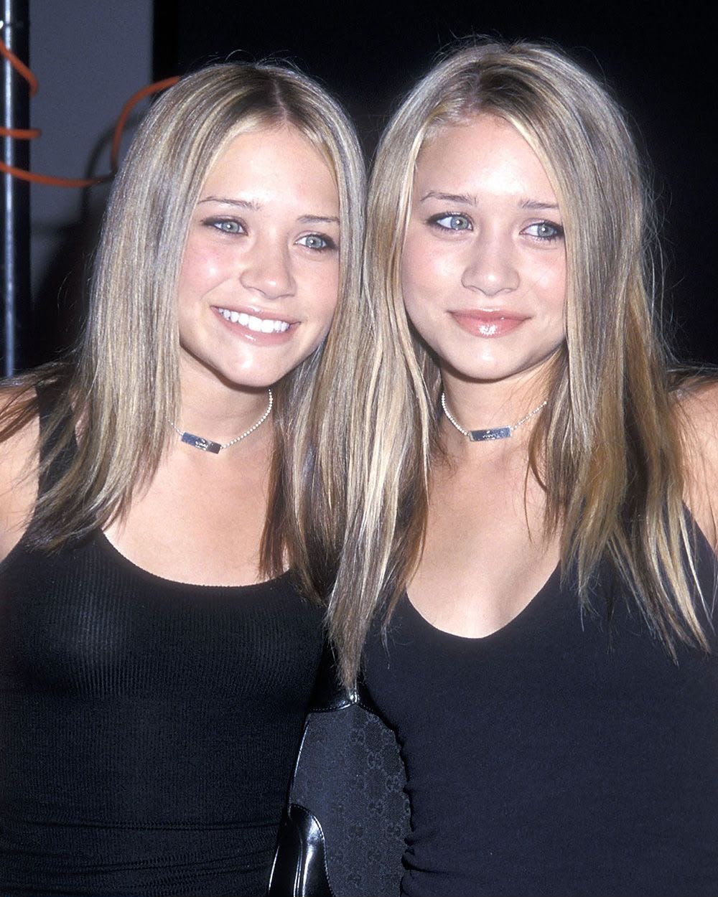
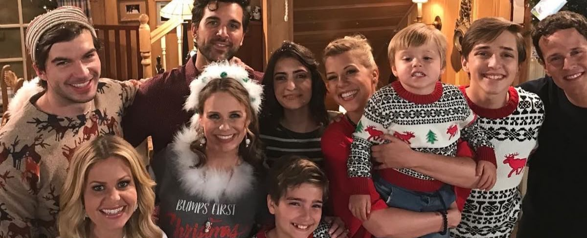
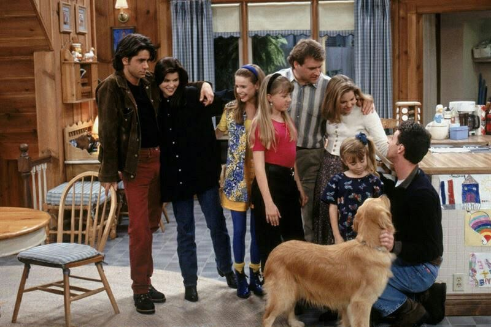
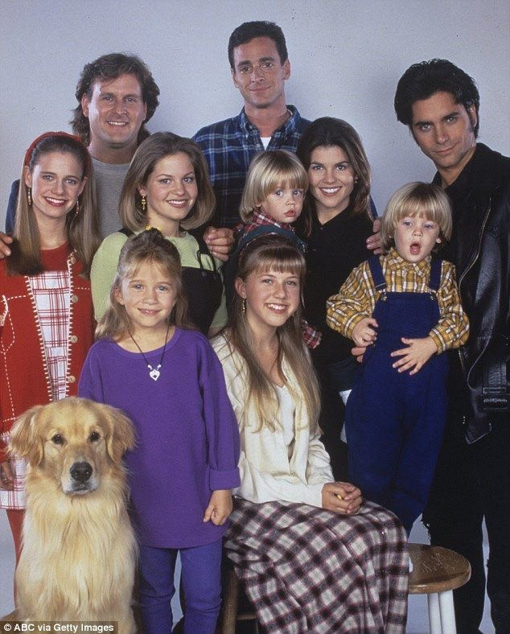
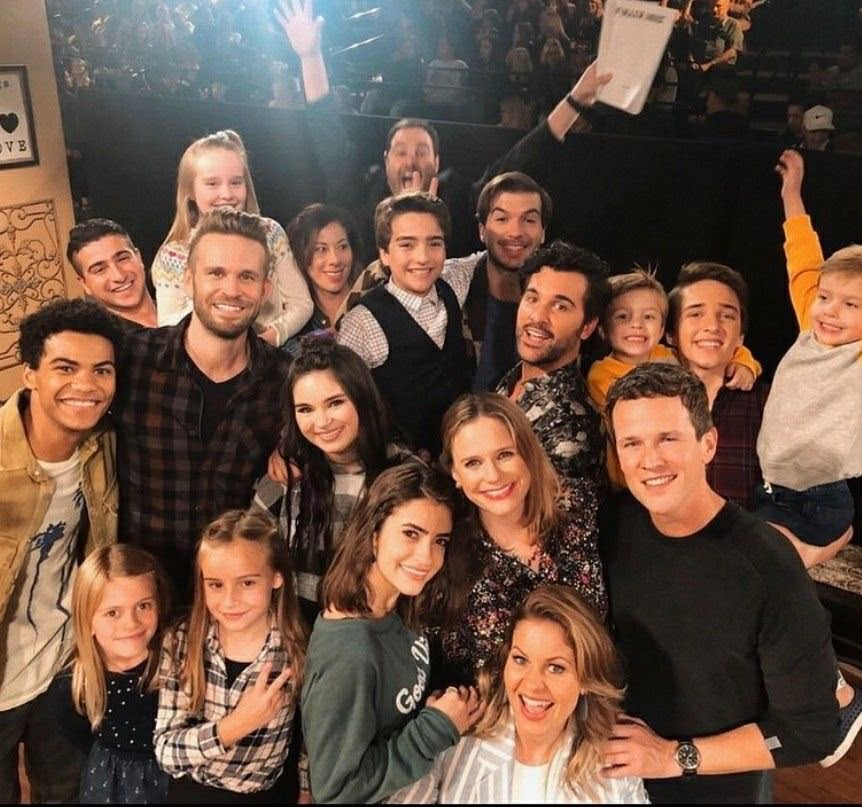
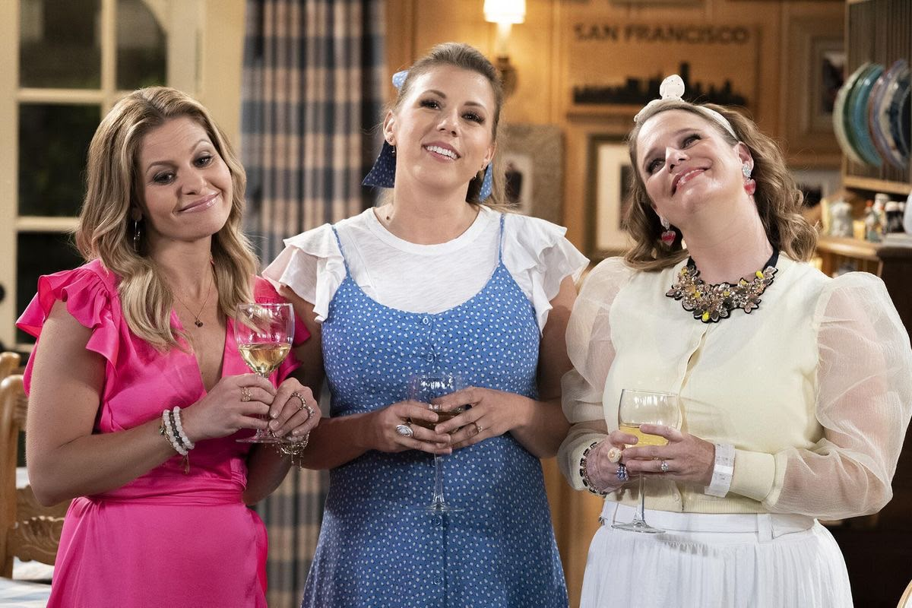
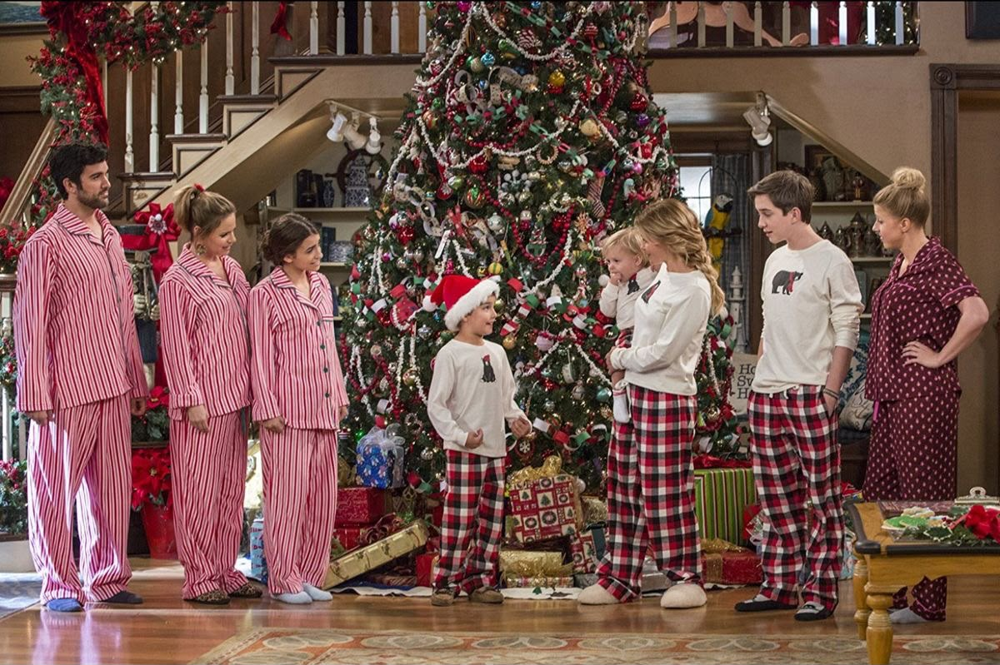

Mary-Kate y Ashley Olsen decidieron no regresar como Michelle Tanner. Su ausencia se explicó en la serie diciendo que Michelle está ocupada con su imperio de moda en Nueva York.
Años después del final de Full House, la casa vuelve a abrir sus puertas. DJ regresa a la casa donde creció y, junto a Stephanie, Kimmy y sus hijos, comienza una nueva etapa.
VER TRÁILER
El paso del tiempo

Cuando Danny Tanner enviuda, su fiestero cuñado Jesse y su amigo comediante Joey lo ayudan en la crianza de sus tres hijas, D.J., Stephanie y Michelle.

Después de ocho temporadas, la familia se despide de la televisión.

Las aventuras de la familia Tanner continúan. Al enviudar con tres hijos, D.J. recibe la ayuda de su hermana Stephanie y su amiga Kimmy.

La serie llega a su último episodio con una despedida que reúne a la familia y cierra esta nueva etapa.
Las personas que hicieron posible Fuller House.
También creador de Full House. Desarrolló Fuller House para continuar la historia de la familia Tanner.
Dirigió seis episodios de la serie entre 2016 y 2019.

Mary-Kate y Ashley Olsen decidieron no regresar como Michelle Tanner. Su ausencia se explicó en la serie diciendo que Michelle está ocupada con su imperio de moda en Nueva York.
John Stamos, el tío Jesse, fue uno de los principales impulsores para que la serie secuela fuera una realidad y lograr reunir al elenco.

En el primer episodio se hace referencia directa a las gemelas Olsen cuando el elenco mira a cámara después de mencionar por qué Michelle no pudo asistir.

Fuller House concluyó en su quinta temporada porque Netflix consideró que cinco entregas eran la duración ideal para el ritmo y la vida útil de esta clase de comedias de situación (sitcoms).
VOLVÉ A VERLA